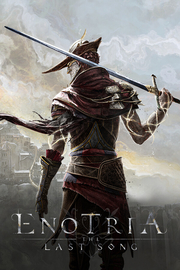

Enotria: The Last Song
Detalles
|  | |
| Tiempo de juego | No Jugado |
| Última actividad | Nunca |
| Añadido | 11/6/2024 15:35:16 |
| Modificado | 11/8/2024 12:00:36 |
| Estado de finalización | No Jugado |
| Librería | Playnite |
| Fuente | 2TB GAS |
| Plataforma | PC (Windows) |
| Fecha de lanzamiento | 9/16/2024 |
| Puntuación de la Comunidad | 62 |
| Puntuación de la Crítica | |
| Puntuación de usuario | |
| Género | Acción Aventura Indie Rol |
| Desarrollador | Jyamma Games |
| Editor | Jyamma Games |
| Característica | Compat. Total Con Mando Préstamo Familiar Un Jugador |
| Enlaces | Punto de encuentro Discusiones Guías Noticias Página de la tienda PCGamingWiki |
| Tag | 3D Acción Ambientales Banda sonora Cinematográficos Combate Difíciles Exploración Fantasía Fantasía oscura Lucha Medievales Para mando Realistas Rol Rol de acción Tercera persona Tipo «Dark Souls» Un jugador Violentos |
Descripción
!WARNING!
If you played the Demo PLEASE start a NEW RUN.
Old Demo saves are not intended to work on the Full game version, if you choose to continue with them, your experience will be compromised and many critical bugs can happen.

Enotria: The Last Song es un Souls emocionante ambientado en un mundo soleado que bebe del folclore italiano y que está lleno de peligros.
El mundo está dominado por el Canovaccio, una obra de teatro perversa y eterna que lo mantiene todo en un estado de estasis antinatural. Tú, Ser sin Máscara, eres la única persona sin un rol establecido y, por lo tanto, libre para elegir tu propio destino. Derrota a los poderosos Autores y utiliza el poder de Ardore para acabar con la parálisis del mundo.
Conviértete en la Máscara del Cambio.
Un Souls de verano
Enotria es una tierra preciosa y soleada, inspirada en la naturaleza italiana, que esconde oscuros secretos tras su fachada luminosa y en tus manos está desentrañar los misterios de este mundo espectacular.

Tantas máscaras y tan pocas caras
Ponte las máscaras de tus rivales caídos para interpretar sus papeles y crear nuevos modos de juego, cada uno con sus puntos fuertes y debilidades. Cambia entre un máximo de tres equipamientos personalizables cuando quieras.

La Senda de los Innovadores
Amplía las posibilidades de juego con un extraordinario conjunto de talentos en la Senda de los Innovadores. Añade talentos a las máscaras para crear combinaciones en una sola pantalla, disfruta de un sistema único que hace que crear estrategias y adaptar el estilo de juego a cada situación sea más fácil que nunca.

Flexibilidad sin igual
Elige estratégicamente qué máscara se enfrentará a los peligros de Enotria y cambia entre un máximo de tres equipamientos personalizables cuando quieras. Cada uno te permite probar un estilo de juego distinto sin tener que pararte a modificar características ni habilidades.

Alteración de la realidad
Utiliza el poder de Ardore para alterar la realidad de forma dinámica. Alterna estratégicamente de un estado ambiental a otro para resolver enigmas, revelar secretos, atravesar un mundo en decadencia y ganar una ventaja estratégica en el combate.

Desbloqueo de tu potencial
Rompe la postura de un enemigo y lanza un ataque de respuesta devastador que te otorgará la bonificación Despertar. Encadena asesinatos y cambia entre máscaras para alterar las recompensas que recibas y así prepararte mejor para enfrentarte a tu rival.
Características principales:
♦ Blande a Ardore para cambiar el mundo que te rodea.
♦ Mantén la guardia alta con pasos rápidos y golpes encadenados.
♦ Golpea a tus enemigos para cargar potentes líneas mágicas.
♦ Cambia estratégicamente entre un máximo de tres equipamientos cuando quieras.
♦ Rompe la postura de un enemigo y lanza un ataque devastador que te otorgará la bonificación Despertar.
♦ Descubre los secretos de Enotria para obtener Inspiración y desbloquear nuevas ventajas en la Senda de los Innovadores.